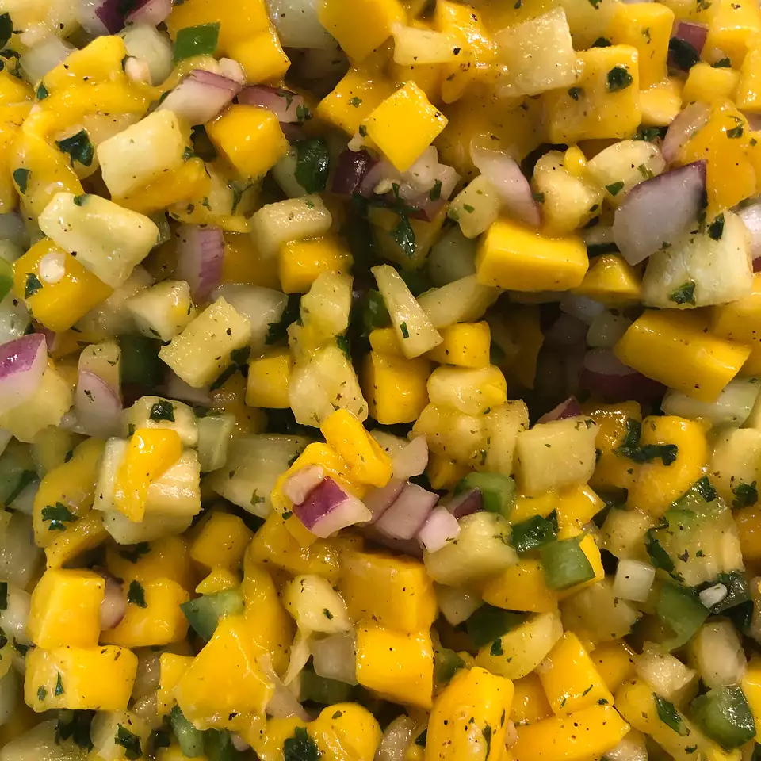

Cucumber-Mango Salsa

Delicious recipe for you and your family!
The children will love and enjoy this recipe!
Ingredients
- 3 mangos - peeled, seeded and diced
- 1 cucumber - peeled, seeded and diced
- 2 jalapeno peppers, seeded and finely chopped
- 1 large onion, finely diced
- 1 clove garlic, minced
- 1/4 cup chopped fresh cilantro
- 1 tablespoon lime juice, or to taste
- salt and pepper to taste
Steps
- Stir together the mango, cucumber, jalapeno pepper, onion, garlic, and cilantro in a mixing bowl. Season with lime juice, salt, and pepper. Refrigirate at least 2 hours before serving to allow the flavors to blend.